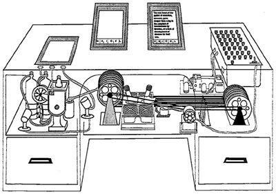
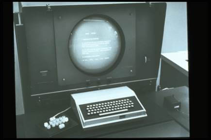

es el medio con que el usuario puede comunicarse con una máquina, equipo, computadora o dispositivo, y comprende todos los puntos de contacto entre el usuario y el equipo
En 1945 Vannevar Bush, un científico del MIT público un artículo en el que se describía la interacción humano maquina como una herramienta de administración de la información a la que bautizó como Memex, la interfaz gráfica puede ser de varios tipos interfaz de hardware, interfaz de software, e interfaz de software-hardware
|
 Ejemplo interface humano maquina recuperado de: https://orekait.com/blog/wp-content/uploads/2016/02/interfaz-hombre-maquina.jpg |
 Maquina engelbart recuperado de:https://orekait.com/blog/wp-content/uploads/2016/02/interfaz-hombre-maquina.jpg |
Interfaz de usuario 2021. Wikipedia. recuperado de: https://es.wikipedia.org/wiki/Interfaz_de_usuario
Interfaz de Usuario: Historia de la interfaz hombre máquina 2016. Iker Garmendia. recuperado de: https://orekait.com/blog/interfaz-de-usuario-historia-de-la-interfaz-hombre-maquina/
{kind=link}